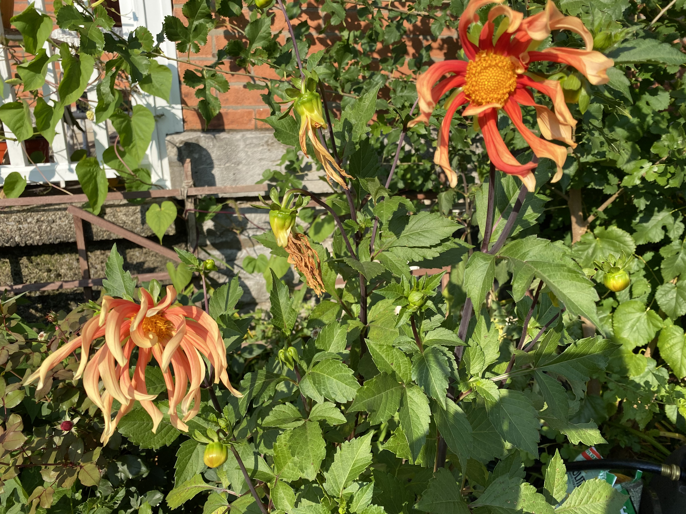

A red paragraph.
This is my 2nd blog technically; but, kind of the first if you consider the first is just a dumping ground for all of the crap that I was learning. This project is going to be much more intentional. The goal here is going to be to place text, style and content in as I like.
I used to be pretty wild, but that got old and expensive. So I quit the show and started to live as an introverted hermit. Which is now we got here... To this moment, when I started keeping a public log of my thoughts, ideas, beliefs and experiences. So that the world can have a glimse into my laberynth of secrets.
Have fun and be safe!
This is me looking fly
This Dhalia was AMAZING. I really love dhalias because they are pretty easy to take care of. Really all that you need to do is plant the tuber in the spring in the garden and then water and wait. So that is exactly what we did with this little guy. I pull the tubers out around October when I plant my bulbs, and store them in a cool dry location.